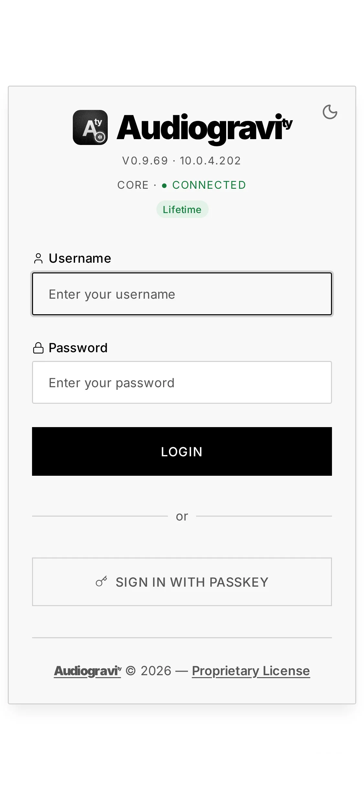
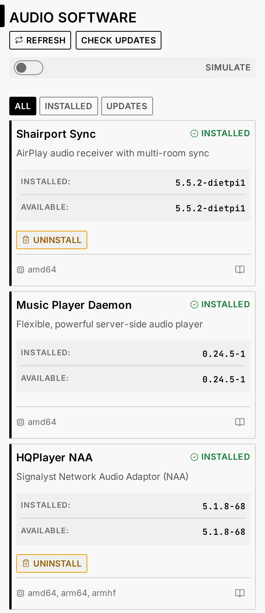
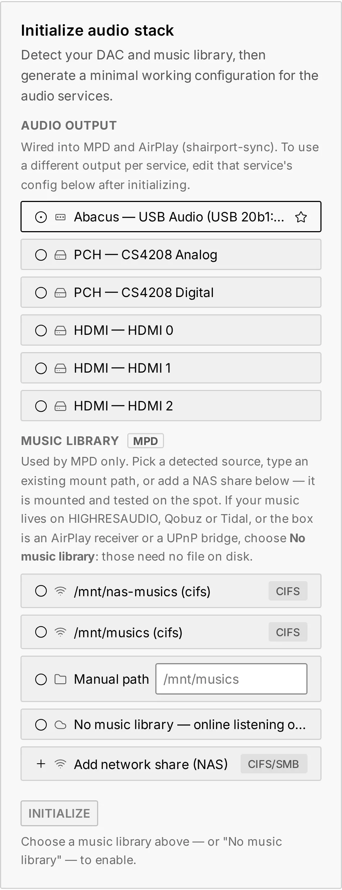
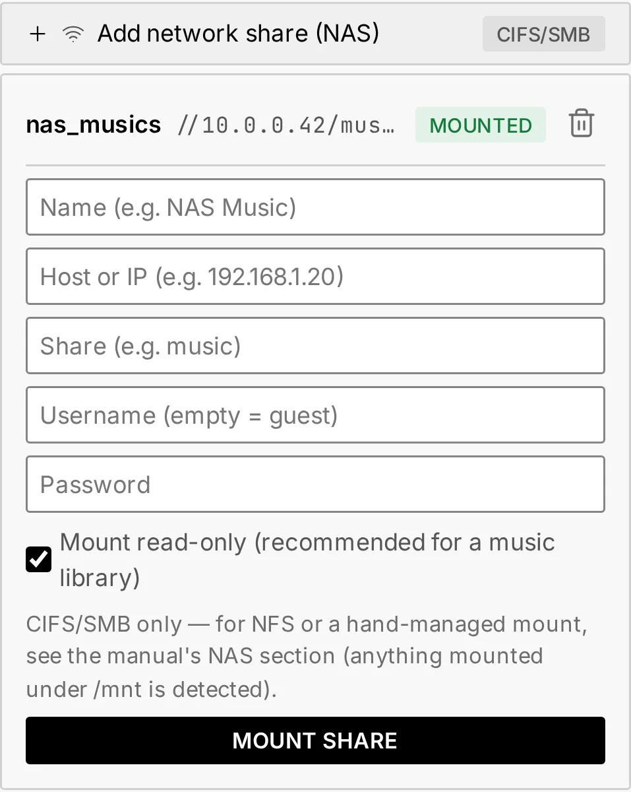
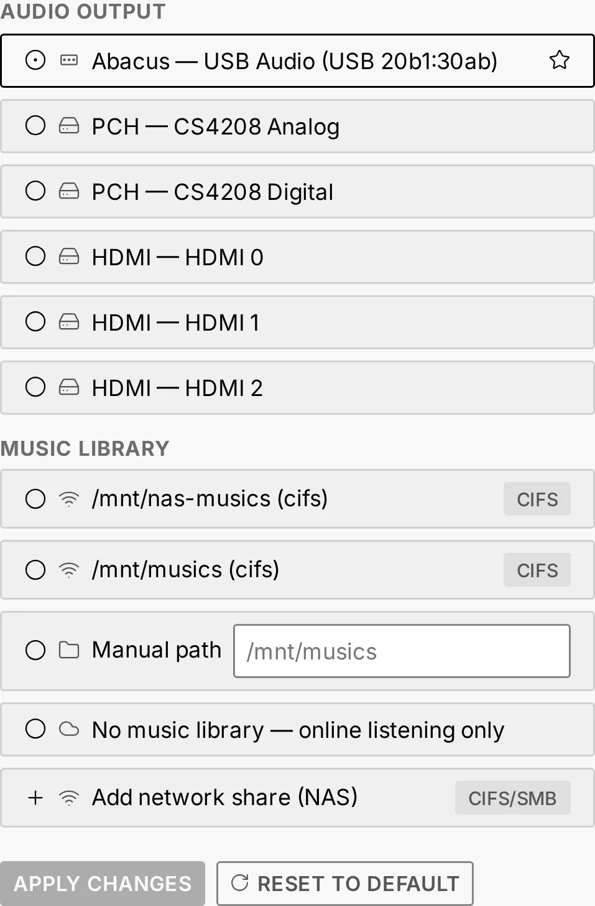
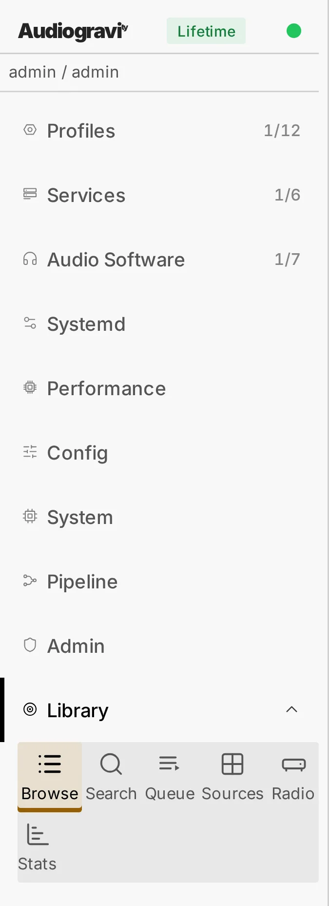
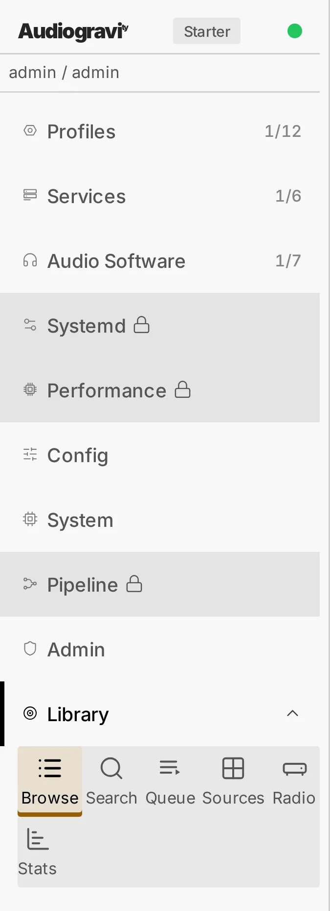

3. First run — guided audio setup
The first time you open Audiogravity, a few guided steps take you from a bare box to music playing — without touching a config file.
1. Your trial activates automatically
A 30-day trial — full access to every Pro feature — is activated on first run. No action required, no card. When it ends you can keep using the free Starter features or buy a lifetime licence (see 7. Administration → Licence).
2. Sign in — and secure your account
Audiogravity ships with one administrator account: username admin,
password admin123. Sign in with it, then change the password right away
(Admin tab → your user card) — the default is public knowledge.
After your first password login, Audiogravity offers to register a
passkey on the device — Face ID, Touch ID, a fingerprint or a hardware key.
Accept, and every later login becomes a tap: the login screen recognises the device
and asks for the passkey directly, with Use password instead as the fallback.
(Passkeys work from the box's name, never from its address — on an iPhone or iPad from
https://<name>.local, once the box's certificate is trusted on the device: see
7. Trust the box's certificate.)
More accounts — family members, a guest who can only control what is playing — can be added later from the Admin tab (see 7. Administration).
Light or dark, before you sign in. The sign-in screen follows your device: light by day, dark at night on a device that switches by itself. A small button in the corner of the sign-in card switches the two — a moon when the page is light, a sun when it is dark; the icon always shows where pressing it takes you — and this device then keeps your choice instead of following its own; Settings → Appearance → Automatic gives it back (7. Administration). It changes the appearance only: which look you use — Minimal, Slate or Gravity — is chosen in Settings too, and this button flips that look's palette. The appearance is applied before the page is drawn, so a box you left in dark opens dark, with no white flash — which matters on a box you start at night.

3. Install the audio engines
MPD is already there. The installer brings it, because Audiogravity plays everything through it: your local library, the queue, internet radio, and Qobuz, Tidal and HIGHRESAUDIO alike. Its card in Audio Software offers no UNINSTALL button for that reason — a box without MPD has an interface and no sound. If you use the box only as a Roon endpoint or an HQPlayer NAA, stop its service from the Services tab and turn its ENABLED badge off there: a stopped daemon costs nothing, and that badge is what keeps it stopped after a reboot.
Note. Installing or updating Audiogravity starts MPD and sets it to start with the box — installing the software means guaranteeing what it plays through. An update therefore undoes both switches above; set them again if that is not what you want.
The other engines are yours to choose, from the Audio Software tab (see 7. Administration → Audio Software): each has a card, with an INSTALL button until it is installed.
- Shairport Sync — to receive AirPlay.
- UPnP Bridge (upmpdcli) — to expose the box as a UPnP renderer other apps can cast to. It drives MPD, so it needs the player that is already there.
- Roon Bridge / Roon Server / HQPlayer NAA — only if you use Roon or HQPlayer.
- HQPlayer Embedded — HQPlayer itself, running on the box: see 6. Outputs & engines → HQPlayer Embedded.
Install what you need now — you can always come back for the rest later.

4. Configure the audio stack (guided)
On a new box, the Config tab shows a Set up your audio stack banner (administrators only). Its Configure audio stack button opens the Initialize audio stack panel, which:
- Auto-detects your DAC and your music library.
- Generates a minimal configuration for the three audio services — MPD (local library) and AirPlay (shairport-sync) wired to the output you choose, and UPnP (upmpdcli), which plays through MPD.
- Asks for your admin password before applying.
Once at least one service is set up, the banner disappears and each MPD / AirPlay / UPnP tile shows a CONFIGURED badge.

Bit-perfect, at full volume. MPD's configuration sends your music to the DAC without resampling or converting it: with the volume at 100, what your DAC receives is what the file contains — a 16-bit file padded to 24 or 32 bits, its values unchanged. Below 100, the volume recalculates every sample, at a level below your DAC's own noise; for strict bit-perfect playback, leave it at 100 and set your level on your amplifier. One exception: a DAC that accepts 16 bits only. The volume works on 24 bits, so even at 100 the music is brought back to 16 bits with a faint noise added (dither). AirPlay is not bit-perfect: to stay in time with the sender, it adds or drops a sample now and then.
Raspberry Pi with a HAT DAC? A board stacked on the GPIO header is not detected until Linux is told it exists, so it will be missing from this panel. Declare it once at the OS level — see 9. Troubleshooting → My DAC is not in the output list — then come back here.
The DAC stays put
Audiogravity knows each output by the name of its sound card, not by the number Linux gives the card — a number that can change from one start of the box to the next. So the output your services target never drifts, and nothing needs re-checking at startup.
Per-service outputs
Each service can target its own output. For example: MPD on your USB hi-res DAC, AirPlay on the optical out. Change any service's output later from the Guided editor (see below) in a couple of clicks.
No music of your own? Say so
A box with no local music is an ordinary box: HIGHRESAUDIO, Qobuz and Tidal need no file on disk, and neither does an AirPlay receiver or a UPnP bridge. The picker offers No music library — online listening only as a choice in its own right. It is not an empty field — it is an answer, and the box records it as one: MPD is configured without a music folder rather than with a blank one, and everything else works normally.
The choice is reversible in both directions. A box that started with no library can be pointed at one later from the Guided editor, and one that has a library can be released from it — with a confirmation first, since that takes something away.
A path you do give is checked before anything on the box is touched: it must be absolute, exist, be a directory, and be readable by the account MPD runs as — a folder you can read is not necessarily one MPD can, and that difference is invisible once MPD is running. If a check fails you are told which one, and nothing has been changed.
Music on a NAS? Add the share from the picker
The Music library picker lists what the box can already see: USB drives (ext4 / exFAT) and existing mounts. For a NAS share (CIFS/SMB — what Synology, QNAP and every mainstream NAS speak), use Add network share (NAS) at the bottom of the picker: give it a name, the NAS host, the share name and — unless it's a guest share — its username and password. Audiogravity mounts and tests the share on the spot: on success it appears in the list, pre-selected; on failure you get the actual mount error (wrong password, unreachable host) and nothing is left behind.
The share is mounted read-only by default, on demand rather than at startup, so a NAS that is switched off when the box boots causes no trouble. Your credentials are stored where only the system can read them.
Adding a share mounts and selects it, but does not yet make it MPD's library on its own — that's the same two-step rule as any source: pick it in the picker, then confirm — click INITIALIZE (in the panel) or Apply (in the Guided editor) to actually point MPD at it. That confirm step also starts a library scan so the new music is indexed and shows up in the Library view (a large NAS keeps indexing in the background — give it a moment). To remove a share, reopen the panel: each one it created is listed with its state (mounted / on-demand) and a trash button — removing one it isn't currently using takes effect immediately; if the share is MPD's active library, it warns you first.

Prefer the terminal, or need NFS? Any share you mount yourself at the OS level (CIFS or NFS) under
/mntis detected exactly the same way — see 9. Troubleshooting → Manual NAS mount for the recipe. NFS is available from the terminal only.
5. Change output or library later (Guided mode)
For administrators, the Config editor of MPD, AirPlay and UPnP opens in a Guided view. There you change the audio output — and, for MPD, the music library, whether DSD leaves as DoP, and whether your DAC's volume goes to full during DSD — in a couple of clicks; UPnP has nothing to choose, because it plays through MPD. Only the setting you touch is rewritten — the rest of your config is preserved. A Reset to default action regenerates a clean minimal config (admin password required; your current file is backed up first).
Choosing another USB drive as the library takes the previous one out of use when you apply. If something still reads it — a terminal open in its folder, a renderer playing from it — Guided says so: close it, then apply again.

6. Find your way around
The tab bar (across the top on a computer, a sidebar on a phone or a small tablet) is the app's map:
- Profiles · Services · Audio Software · Systemd · Performance · Config · System — running the box: audio scenarios, service control, engine installs, OS tuning, config files and monitoring (all covered in 7. Administration).
- Pipeline — the live signal-path view (Pro; see 6. Outputs & engines).
- Admin — users and access, announcements, updates and the licence.
- Library — browse, search, queue, sources and outputs: where you play music (the streaming services, the media servers and Roon come with Pro), and what the box has played. In the sidebar, a tap on it unfolds a row of icons — Browse, Search, Queue, Sources, Radio or Stats — and a tap on one opens that view; a second tap on Library folds them. Coming from another tab, the view you were on opens as you left it, an album or an artist still open. Across the top, a tap on Library opens the page, its views in a bar of their own.
- Manual — this manual, readable inside the app; it stands apart from the tabs, at the far end of the bar or the foot of the sidebar.

On a Starter licence, what Pro adds carries a padlock — the Pipeline, Systemd and Performance tabs, Library's Pro sources — and tapping one takes you to the licence panel, with the License activation window open. Config stays open: editing a service's configuration file and the guided setup are available on every edition — configuring the machine is part of owning it; only HQPlayer Embedded's, the NAA's and Roon's files come with Pro.

The sticky Now Playing bar sits above the footer whatever the tab, and the gear in the top bar opens Settings.
Messages say how an action went — saved, added, refused. They appear at the top right on a computer, just under the top bar on a phone, three at most. A success goes away on its own after a few seconds, unless your pointer or your finger rests on it; a warning or an error stays until you close it with its ×. An action that takes a while first says it is under way, and that same message then turns into the outcome.
7. Trust the box's certificate (once per device)
The box serves its interface over HTTPS, with a certificate it signed itself. Each phone, tablet or computer has to trust it once: there is nothing to redo afterwards, not even when the box changes address.
- On an iPhone or iPad this is required: until it is done, Safari does not open the interface at all.
- On Android and on a computer the interface opens after a warning, but the app does not install and notifications do not work until the certificate is trusted.
Below, <name>.local is your box's name, the address the installer prints at the end —
musics.local for a box called musics. No longer have it? See
2. Installation → Find your box's name. If the
name does not open on a device, use the box's address in its place, 192.168.1.30 for
instance.
On an iPhone or iPad
- An Audiogravity icon is already on the Home Screen? Remove it first — touch and hold it, then remove it. You add it again at the end.
- In Safari — not another browser — open
http://<name>.local:8081/ca.crt. Typehttp://, nothttps://: that address serves this one file. - Safari asks whether to allow a configuration profile: tap Allow. If it asks which device, choose this one. Then tap Close.
- Open Settings right away and tap Profile Downloaded, near the top. Tap Install, enter your passcode, tap Install each time it is asked again, then Done. No Profile Downloaded line? Look in General → VPN & Device Management; not there either, start again at step 2.
- In Settings → General → About, scroll to the very bottom and tap Certificate Trust Settings. Under Enable full trust for root certificates, turn on Audiogravity Local CA, followed in brackets by your box's hostname — the one it had at its first install, if it was renamed since. Then tap Continue. This switch is the step that counts: installing the profile alone changes nothing.
- Check: in Safari, open
https://<name>.local. The sign-in page opens, with no warning. Now add the app: 8. Install it as an app.
On Android
- The phone needs a screen lock — PIN, pattern or password: without one, Android refuses the certificate. Set one first if needed.
- In Chrome, open
http://<name>.local:8081/ca.crt—http://, nothttps://. The fileaudiogravity-ca.crtdownloads; if Chrome asks, accept the download. Tapping the file does nothing: carry on. - Open Settings, tap the search field, type
CA certificateand open CA certificate. On a Pixel, it is under Security & privacy → More security settings → Encryption & credentials → Install a certificate. - Tap Install anyway, confirm with your screen lock, then pick audiogravity-ca.crt in Downloads. Android warns that a third party could see your traffic: here, that third party is your own box.
- Check: in Chrome, open
https://<name>.local. It opens with no warning. Now add the app: 8. Install it as an app.
On a Mac
- Open
http://<name>.local:8081/ca.crt: the fileaudiogravity-ca.crtlands in Downloads. If the browser asks, allow the download. - Double-click it. Keychain Access asks where to add it: choose login, then Add.
- In Keychain Access, find Audiogravity Local CA with the search field, and double-click it.
- Open Trust and set When using this certificate to Always Trust. Close the window and enter your Mac's password.
On a Windows PC
- Open
http://<name>.local:8081/ca.crt: the fileaudiogravity-ca.crtlands in Downloads. If the browser asks, allow the download. - Double-click it, click Install Certificate…, choose Current User, then Next.
- Choose Place all certificates in the following store, click Browse… and pick Trusted Root Certification Authorities, then OK, Next and Finish. Answer Yes to the security warning.
- Close the browser, and open it again.
Firefox, on any computer, keeps a list of its own: Settings → Privacy & Security → Certificates → View Certificates… → Authorities → Import…, pick the file, then tick Trust this CA to identify websites.
Why not simply a real certificate? Because a public authority will not certify a private address like
192.168.1.30. If you would rather have a certificate every device trusts with no manual step — or the app, passkeys included, from another network than the box's — give the box a domain name and a real certificate: see 2. Installation → A real domain.
8. Install it as an app (recommended on phones)
Added to the Home Screen, Audiogravity opens fullscreen, in its own window, with its own icon — and on an iPhone or iPad, that is what lets it receive notifications. Do step 7 first on that device: until the certificate is trusted, the app does not install.
Add it from the box's name, https://<name>.local — the address the installer prints
first and puts in its QR code (lost it? see
2. Installation → Find your box's name). An installed app
reopens for ever the address it was added from, with no address bar to correct it: one
added on the name follows the box when the router hands it a different address.
On an iPhone
- In Safari, open
https://<name>.local. - Tap ⋯, then Share. With the tabs at the bottom or the top of the screen, tap Share directly.
- Scroll down the list and tap Add to Home Screen. Not in the list? At its very bottom, tap Edit Actions, then add Add to Home Screen.
- Turn on Open as Web App.
- Tap Add, then open Audiogravity from its new icon.
On an iPad
- In Safari, open
https://<name>.local. - Tap Share, then View More, then Add to Home Screen.
- Turn on Open as Web App, then tap Add.
On Android
- In Chrome, open
https://<name>.local. - A bar says Add Audiogravity to your home screen: tap Install, then Install again. No bar? Tap ⋮, right of the address bar, then Install and create shortcut, then Install.
- Open Audiogravity from its new icon. The installed app also honours the Portrait Lock.
On a computer
Chrome and Edge show an install icon at the right of the address bar: click it, then Install — handy for an always-open controller window.
Notifications on an iPhone or iPad (iOS 16.4 or later) reach the installed app, never a Safari tab: turn them on from the app itself (see 7. Administration → Push notifications).
Phone on another network — a separate Wi-Fi or VLAN for phones and computers: there, the name usually does not open (unless your router relays it between networks). Add the app from the box's address,
https://<box-ip>, and reserve that address for the box in your router — look for DHCP reservation, static lease or address reservation: an icon added on an address stops opening the day the address changes. See 9. Troubleshooting.
Next
Your box now plays. Head to 4. Listening to start playing music, or 5. Library & streaming to connect Qobuz, Tidal, HIGHRESAUDIO and internet radio.